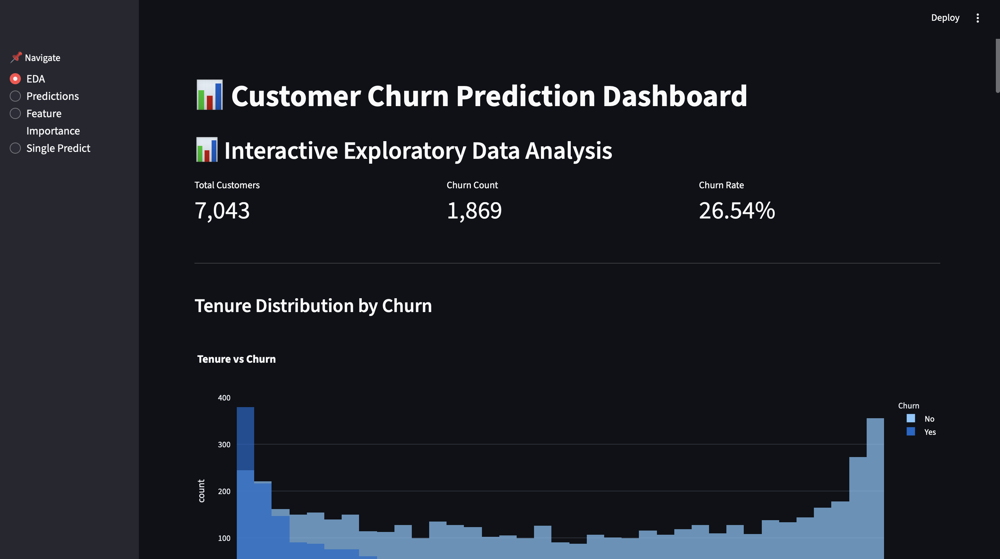
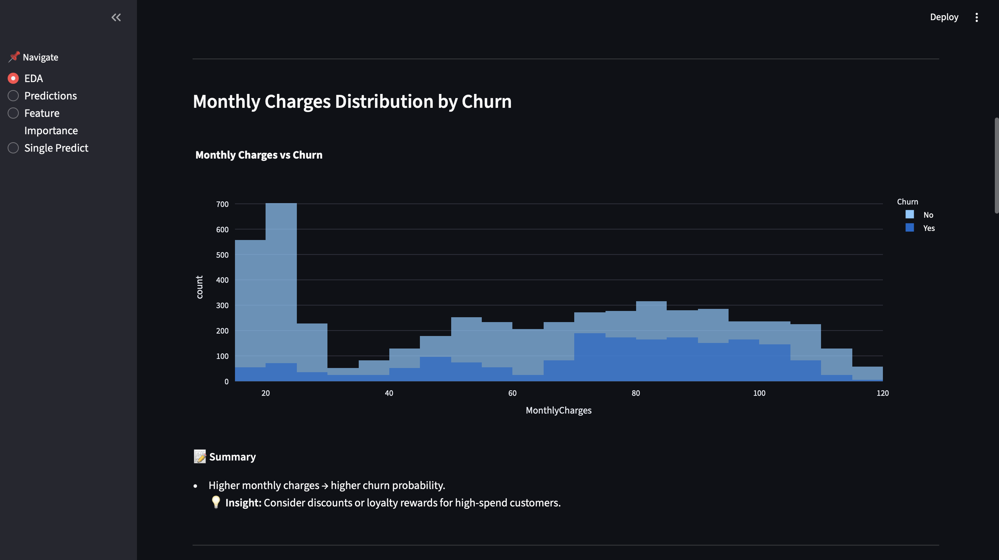
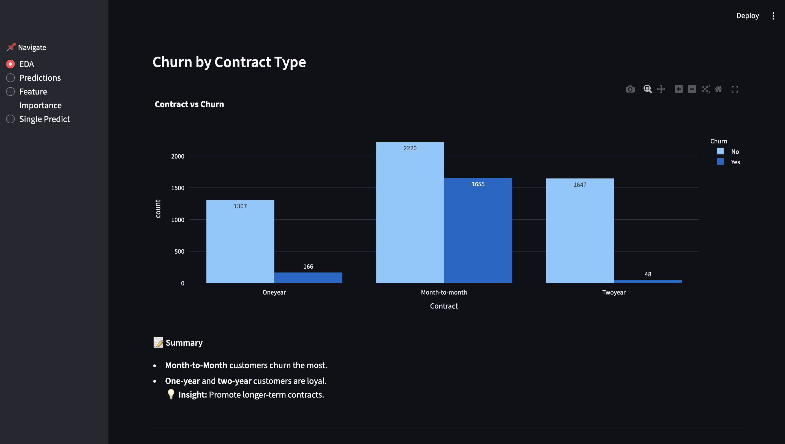
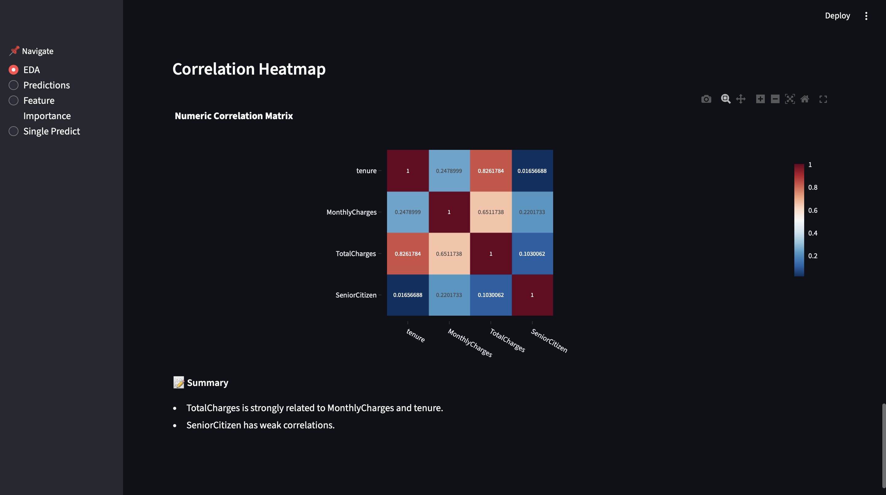
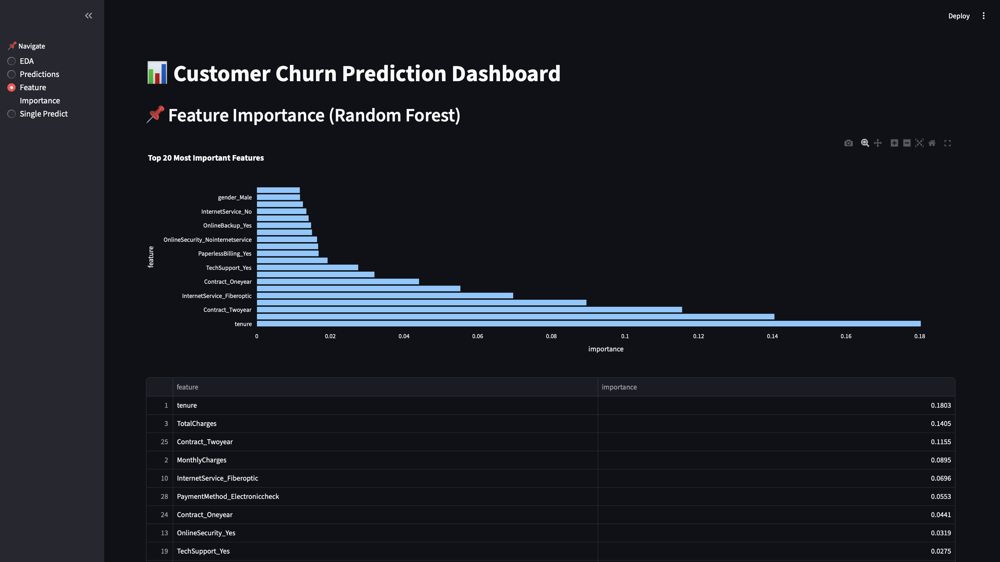
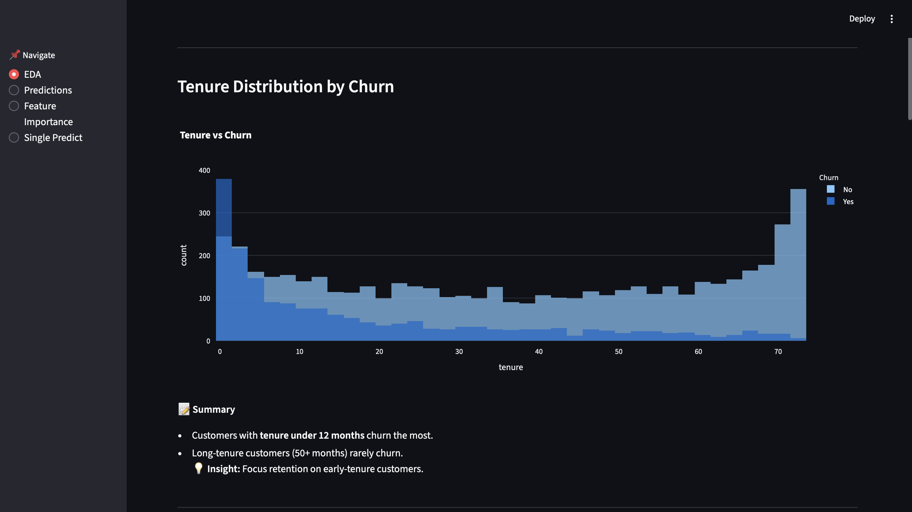
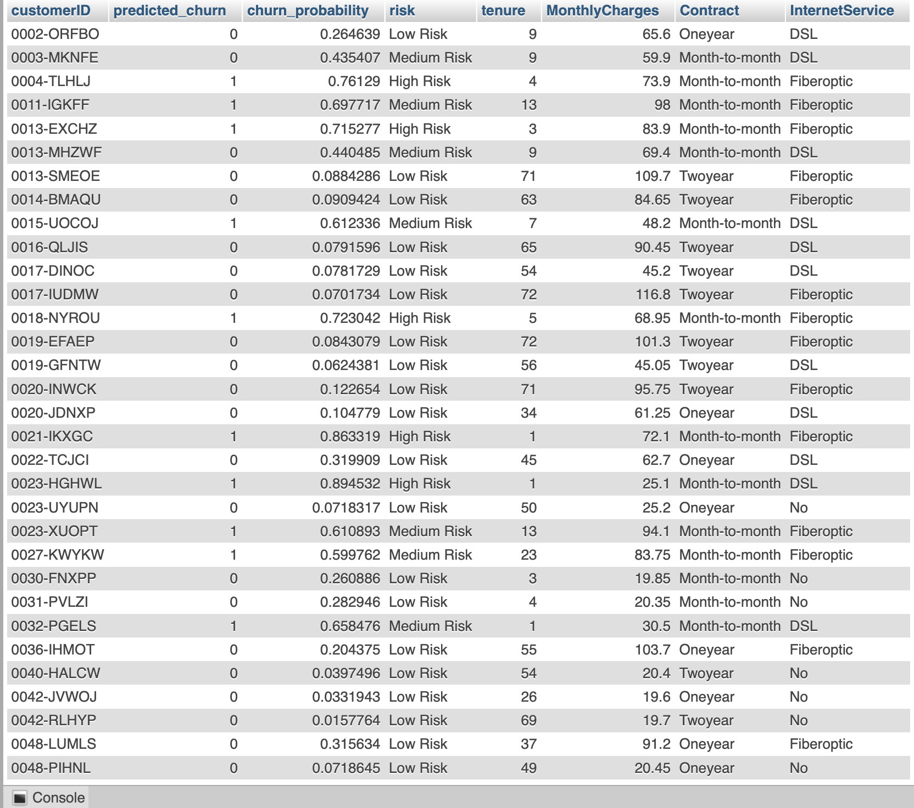

An end-to-end data science system that predicts whether a customer will reorder a product in their next purchase, combining large-scale SQL feature engineering, supervised machine learning, and AI-assisted interpretation using a local LLM.
Predicting product reorders is a core problem in e-commerce demand forecasting, inventory planning, and personalization. This project focuses on predicting whether a specific user will reorder a specific product in their next order.
The system was designed to operate at scale, using SQL-first feature engineering on tens of millions of rows, followed by supervised machine learning and a constrained AI layer that translates model signals into executive-readable insights.
Key Principle: The machine-learning model produces predictions and statistical signals; the AI layer explains those signals without adding inference, causality, or recommendations.
The first step was to clearly define the business problem, not the technical one. Customer churn represents lost revenue, and in subscription-based businesses, retention is often cheaper than acquisition. The objective was therefore not just to classify churn, but to predict churn risk early enough to enable intervention.
Key decisions at this stage:
This framing influenced every subsequent choice: metrics, model type, and dashboard design.
Before cleaning or modeling, the dataset was examined conceptually:
At this stage, the dataset was recognized as:
This understanding prevented blind preprocessing and guided feature handling.
Rather than aggressive transformations, the guiding principle was: Fix what is wrong, preserve what is meaningful.
Key issues identified:
Actions taken:
The intent was to clean without distorting the real-world meaning of the data.
EDA was not treated as visualization for its own sake, but as a way to test assumptions about churn.
Each EDA question followed this structure:
Examples:
Correlation analysis was used only to:
EDA directly informed expectations for modeling but did not hard-code decisions into the model.
The dataset already contained meaningful features, so the approach was: Avoid unnecessary feature invention unless there is strong justification.
Key decisions:
No synthetic features were added because:
This ensured the model learned from authentic customer behavior, not artificial constructs.
Multiple algorithms were tested to balance interpretability, performance, and robustness:
The final model was chosen not solely on accuracy, but on:
This reflects real business constraints, not leaderboard optimization.
Accuracy alone was explicitly rejected as insufficient due to class imbalance.
The evaluation focused on:
Thresholds were treated as business levers, not fixed rules:
This aligns the model with real operational use, not academic metrics alone.
Feature importance analysis was used to answer: "Can we explain this prediction to a non-technical stakeholder?"
Top drivers such as tenure, contract type, and charges:
This step ensured the model could support decision-making, not just prediction.
Rather than stopping at a trained model, the project was designed as a usable system.
Key design choices:
The Streamlit dashboard was intentionally designed to:
This transformed the project from analysis into a data product.
The dashboard design followed these principles:
EDA, predictions, feature importance, and single-customer prediction were separated to avoid cognitive overload.
This mirrors professional BI and ML product design.
Every decision involved trade-offs:
The final system favors:
These priorities reflect real-world data science, not just experimentation.
The project was guided by a simple mental loop: Understand → Validate → Predict → Explain → Deploy
Each stage reinforced the others:
Exploratory Data Analysis was conducted to understand customer behavior patterns and uncover key churn drivers.




Multiple models were evaluated, starting with logistic regression as a baseline and progressing to gradient-boosted trees for improved non-linear learning.
LightGBM was selected as the final model due to its balance of performance, stability, and ability to generate per-instance attribution signals.

Model outputs are translated into concise, executive-readable explanations using a local large language model (Mistral via Ollama).
The LLM does not generate predictions or recommendations. It is strictly used to interpret model signals, following explicit constraints to avoid hallucination, causal claims, or business advice.


This project demonstrated how large-scale transactional data can be transformed into actionable, interpretable predictions when modeling, data engineering, and system design are treated as a single workflow rather than isolated steps.
Key Takeaway: Predictive models deliver the most value when their outputs can be clearly explained, trusted, and consumed within real decision contexts.